Biomes O' Plenty
BiomesOPlenty-fabric-26.2-26.1.2.0.40.jar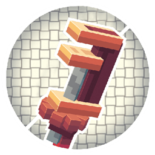
Create Fly (Fabric Port)
create-fly-26.2-rc-2-6.0.9-1.jar
Waystones
⚠️
waystones-fabric-26.2-26.2.0.11.jar
Better Boat Movement
better-boat-movement-3.0.0-26.1+fabric.jarTrade Cycling
trade-cycling-fabric-1.0.21+26.2.jarFallingTree
FallingTree-...jar
Flower Tweaks
⚠️
flower-tweaks-...jar
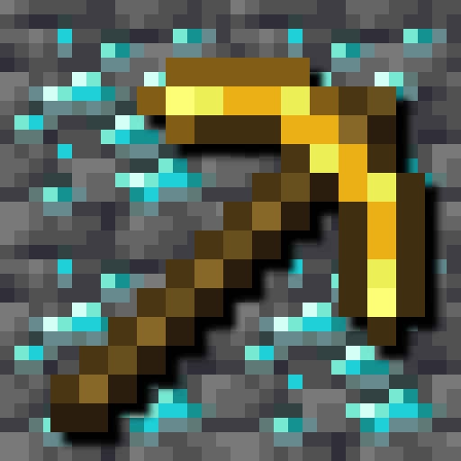
Veinminer
veinminer-...Fabric API
fabric-api-0.159.0+26.2.jar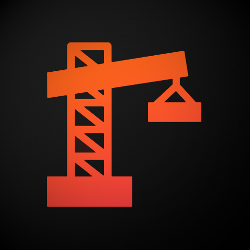
Architectury API
architectury-fabric-21.0.7.jar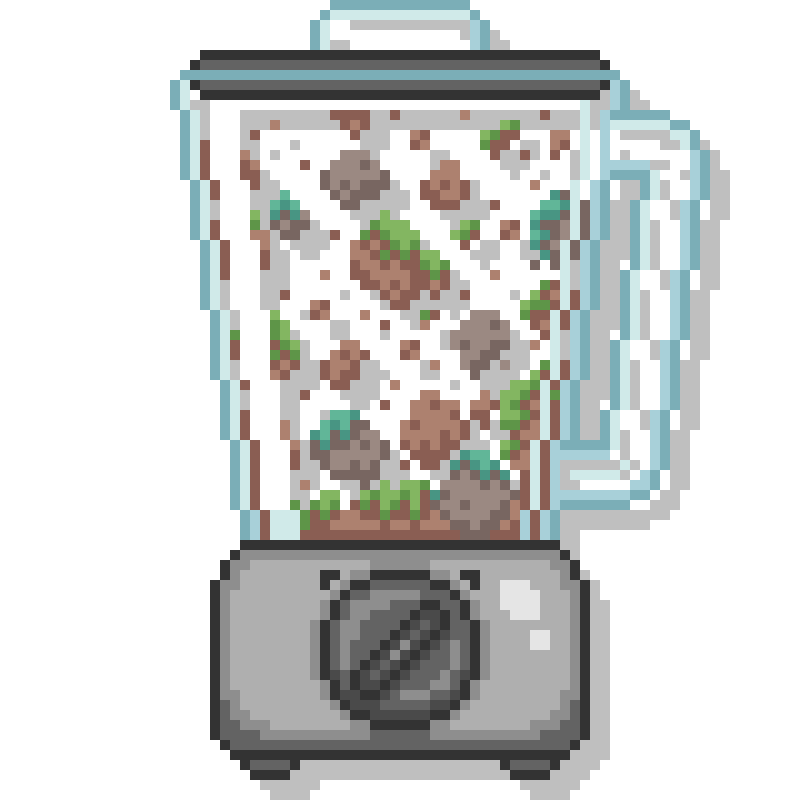
TerraBlender
TerraBlender-fabric-26.2-26.2.0.0.2.jar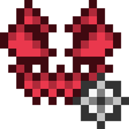
GlitchCore
GlitchCore-fabric-26.2-26.2.0.0.0.jarBalm
balm-fabric-26.2-26.2.0.7.jarShogi
shogi-fabric-26.2-26.2.0.5.jar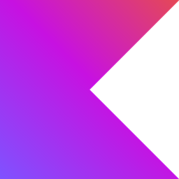
Fabric Language Kotlin
fabric-language-kotlin-1.13.13+kotlin.2.4.10.jarYetAnotherConfigLib (YACL)
yet_another_config_lib_v3-3.9.5+26.2-fabric.jar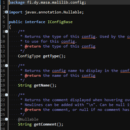
MaLiLib
malilib-fabric-26.2-0.29.3.jarXaero's Minimap
xaerominimap-fabric-26.2-26.4.2.jar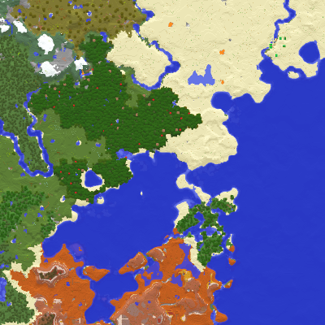
Xaero's World Map
xaeroworldmap-fabric-26.2-1.45.0.jar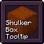
Shulker Box Tooltip
shulkerboxtooltip-fabric-5.4.0+26.2.jarJust Enough Items (JEI)
jei-26.2-fabric-30.28.0.193.jar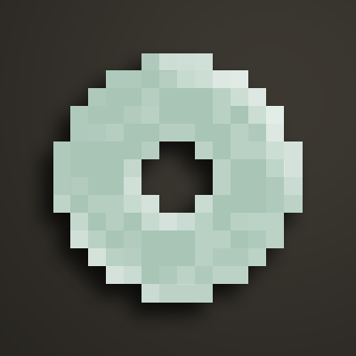
Jade
Jade-mc26.2-Fabric-26.2.11.jar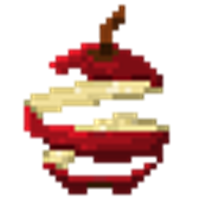
AppleSkin
appleskin-fabric-mc26.2-3.0.10.jarLighty
lighty-fabric-4.0.1+26.2.jar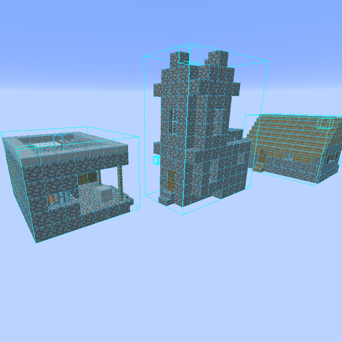
Litematica
litematica-fabric-26.2-0.28.3.jarSodium
sodium-fabric-0.9.1+mc26.2.jarModernFix (mVUS)
modernfix-5.27.19-build.1.jar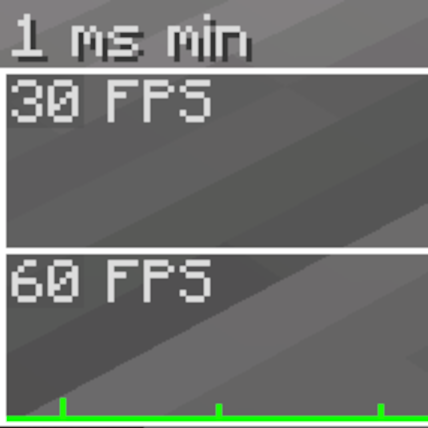
Entity Culling (Fabric/Forge)
entityculling-fabric-1.10.5-mc26.2.jar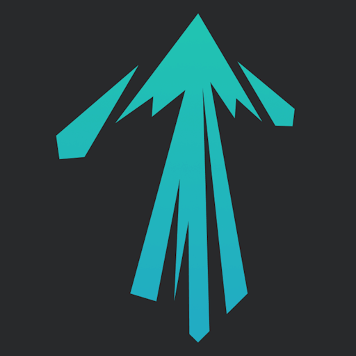
ImmediatelyFast
ImmediatelyFast-Fabric-1.16.4+26.2.jar